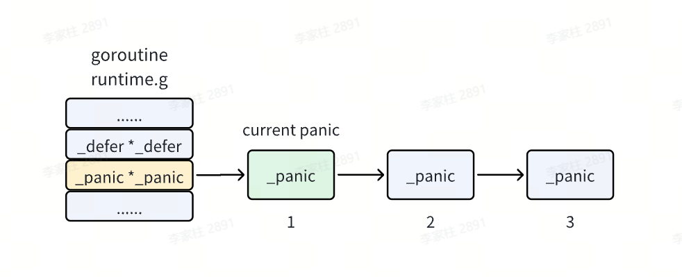
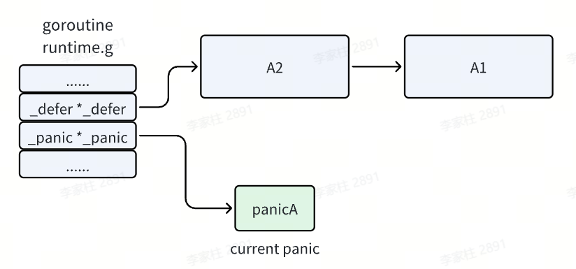
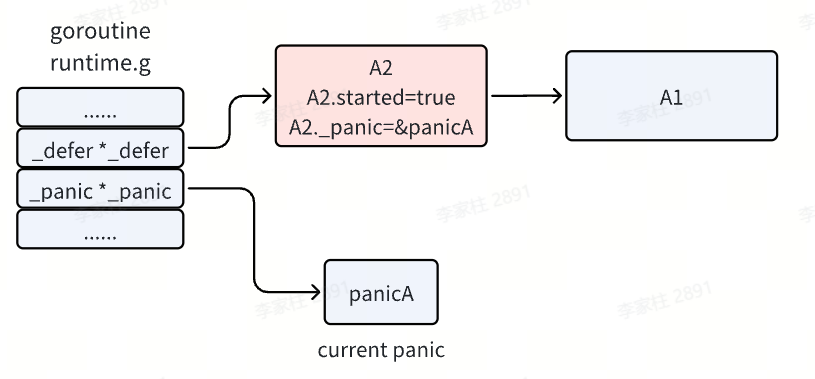
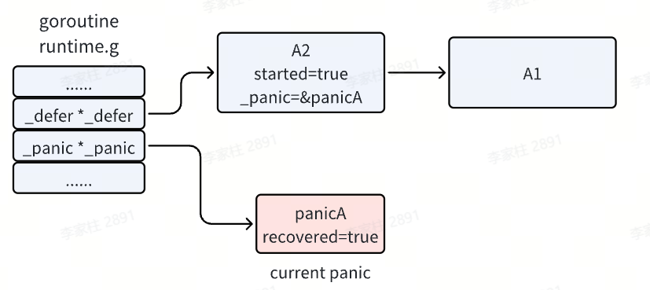
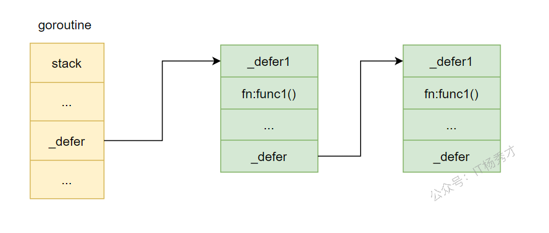
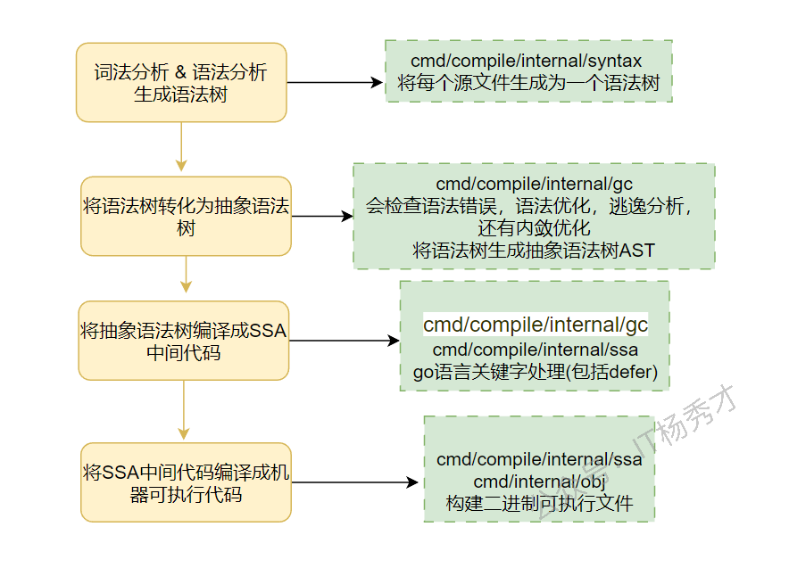

🧠 Go的错误处理机制
📖 引言
在软件开发中，错误处理是一个不可避免的重要环节。不同的编程语言采用了不同的错误处理方式，而 Go 语言以其简洁、实用的错误处理机制著称。本文将深入探讨 Go 语言的错误处理机制，包括核心概念、最佳实践和常见模式，帮助开发者更好地理解和应用 Go 的错误处理。
💡 核心概念
🔍 error 接口
在 Go 中，错误是通过 error 接口来表示的：
|
|
这个接口非常简洁，只包含一个 Error() 方法，返回一个描述错误的字符串。任何实现了这个方法的类型都可以作为错误返回。
⚠️ nil 值判断
在 Go 中，错误处理的标准模式是检查返回的错误是否为 nil：
|
|
如果 err 不为 nil，说明函数执行过程中发生了错误，需要进行处理；如果 err 为 nil，说明函数执行成功。
📝 错误返回模式
📝 单返回值错误
对于只返回错误的函数，通常直接返回 error 类型：
|
|
📋 多返回值错误
对于需要返回结果和错误的函数，通常将错误作为最后一个返回值：
|
|
📦 错误包装与上下文
📦 标准库错误包装
在 Go 1.13 及以上版本中，标准库提供了 errors.Wrap 和 errors.Wrapf 函数，用于包装错误并添加上下文信息：
|
|
🔧 Go 1.13+ 错误包装
Go 1.13 引入了标准库的错误包装功能，使用 %w 动词来包装错误：
|
|
🔗 错误链检查
使用 errors.Is 和 errors.As 函数可以检查错误链中的特定错误：
|
|
🔧 自定义错误类型
🛠️ 简单自定义错误
可以通过实现 error 接口来创建自定义错误类型：
|
|
🔢 带状态码的错误
对于需要携带更多信息的错误，可以在自定义错误类型中添加额外字段：
|
|
✅ 错误处理最佳实践
⏮️ 尽早返回
采用 “尽早返回” 的原则，一旦发生错误就立即返回，避免嵌套过深的代码：
|
|
🏗️ 错误处理层次
在不同层次的代码中，错误处理的策略也不同：
- 底层函数：返回原始错误
- 中间层函数：包装错误并添加上下文
- 顶层函数：处理错误并向用户展示
📝 日志记录
在适当的位置记录错误信息，便于调试和问题定位：
|
|
⚠️ 常见陷阱
⚠️ 忽略错误
永远不要忽略错误，即使你认为它不会发生：
|
|
🔄 错误比较
重要知识点：errors.New() 和 fmt.Errorf() 创建的 error 对象是不可以直接比较的！
errors.New()返回的是一个地址（指针），不能用来做等值判断fmt.Errorf()内部也是用到了errors.New()，同样不可直接比较
|
|
不要直接比较错误字符串，应该使用 errors.Is 或类型断言：
|
|
⚖️ 过度包装
不要过度包装错误，只在需要添加有价值的上下文信息时才进行包装：
|
|
🚨 panic和recover机制
💡 基本概念
在Go语言中，panic和recover是用于处理程序运行时严重错误的机制。panic用于触发一个运行时异常，导致程序执行流程中断并开始逐层回溯调用栈进行栈展开（stack unwinding），而recover是一个内置函数，用于在defer函数中捕获由panic引发的异常，从而阻止程序崩溃并恢复正常执行流程。
📡 panic 传递机制
当一个函数发生了 panic 之后，若在当前函数中没有 recover，会一直向外层传递直到主函数，如果迟迟没有 recover 的话，那么程序将终止。如果在过程中遇到了最近的 recover，则将被捕获。
|
|
运行结果：
|
|
解析：
调用链：main --> testPanic1 --> testPanic2 --> testPanic3
- 在
testPanic3中发生了panic，由于testPanic3没有recover - 向上传递，在
testPanic2中找到了recover，panic被捕获 - 程序接着运行，
testPanic3发生panic后不再继续执行 testPanic2捕获到panic后也不再继续执行- 跳出
testPanic2，到testPanic1接着运行
📌 总结：
recover()只能恢复当前函数级或以当前函数为首的调用链中的函数中的panic()，恢复后调用当前函数结束，但是调用此函数的函数继续执行- 函数发生了
panic之后会一直向上传递，如果直至main函数都没有recover()，程序将终止，如果是遇见了recover()，将被recover捕获
⚙️ 实现原理
panic：Go运行时维护了一个与goroutine关联的_g结构体，其中包含一个_panic链表字段。每当发生panic时，runtime会创建一个新的_panic结构体节点，并将其插入到当前goroutine的panic链表头部。这个结构体记录了panic的值、是否已被recover捕获等信息。同时，runtime会保存当前的程序计数器（PC）和栈指针（SP），以便后续进行栈展开。随后，系统开始执行当前函数中所有已经defer但尚未执行的函数（LIFO顺序）。
recover：recover也是内置函数，在编译期间被特殊处理。它只能在defer函数体内有效调用。其内部逻辑是检查当前goroutine是否存在未被处理的_panic对象，并判断该_panic是否正在被当前defer函数处理。如果是，则将该_panic标记为"已recover"，并返回其value字段；否则返回nil。
栈展开：当panic发生后，Go运行时会从当前函数开始向上逐层退出函数调用帧。每退回到一个函数，就执行其defer列表中的函数。这一过程持续到某一层的defer函数成功调用recover为止。若一直没有recover，则最终到达main函数或goroutine入口，打印panic信息并退出程序。
🚫 哪些异常不会被recover
- 运行时致命错误（fatal runtime errors）
- 栈溢出（stack overflow）
- Go runtime 自身内部错误（runtime panic 之外的致命错误）
- 程序直接调用 os.Exit()
🌐 在子协程中使用recover
建议在子协程（goroutine）中使用 recover，主要是为了防止整个程序因为子协程的 panic 而崩溃。
原因：每个 goroutine 是独立执行的线程单元。如果子协程内部发生 panic，而没有被 recover 捕获：
- panic 会沿着当前 goroutine 的调用栈向上传播
- 不会自动传播到其他 goroutine，但会终止整个程序
作用：
- 隔离子协程的错误：使用 recover 可以捕获子协程的 panic，防止它终止整个程序。主程序可以继续执行，同时对子协程错误进行处理或重启。
- 实现容错与重启机制：捕获 panic 后可以记录日志，上报错误，重启该子协程。
🔄 panic嵌套
在 Go 语言中，如果一个函数中发生了 panic，然后在 defer 中又发生了 panic，这被称为panic嵌套或二次 panic：
- 第一个 panic 触发
- 函数执行被中断
- 开始执行 defer 函数（按照 LIFO 顺序）
- 在 defer 中发生第二个 panic
- 当前的 panic 处理过程被中断
- 第二个 panic 会替代第一个 panic
- 第一个 panic 的信息会丢失
- 程序终止
如果没有外层的 recover，程序会崩溃，崩溃信息只显示第二个 panic。
⚙️ 底层原理
当前执行的 goroutine 中有一个 defer 链表的头指针，其实它也会有一个 panic 链表头指针，panic 链表链起来的是一个个的 _panic 结构体。
panic 链表和 defer 链表类似，也是在链表头上插入新的 _panic 结构体，所以链表头上的 panic 就是当前正在执行的那一个。

|
|
以下面的代码为例
|
|
执行流程如下
- 函数 A 注册了两个
defer函数 A1 和 A2 后发生了panic，执行完两个defer注册后，defer链表中已经注册了 A1 和 A2 函数。 - 发生了 panic，并且 panic 之后的代码不会再执行了，而是进入了 panic 的处理逻辑。首先会在 panic 链表中增加一项，我们将它记作
panicA，它就是我们当前执行的panic。

- 接着执行
defer链表了，即从头开始执行。panic执行defer时，会先将其started置为 true，即标记它已经开始执行了。并且会把_panic字段指向当前执行的panic，标识这个defer是由这个panic触发的。

- 如果函数 A2 能正常结束，则这一项就会被移除，继续执行下一个 defer。
- 当
def函数中存在recover时，此时就会把当前执行的 panicA 置为已恢复，然后 recover 函数的任务就完成了。程序会继续往下执行 Println 语句，并打印panic的信息，直到 A2 函数执行结束。

🧵 defer 原理详解
❓ defer是什么
defer 是 Go 语言中的一个关键字，用来修饰函数调用。它的作用是让 defer 后面的函数或方法调用延迟到当前函数 return 或 panic 时再执行。
🧪 defer 的使用形式
|
|
使用 defer 时，只需要在后面跟上具体的函数调用即可。编译器会注册一个延迟执行的函数，并在注册时确定函数名和参数，等当前函数退出时再执行。
🧱 defer 的底层结构
进行 defer 函数调用时，底层其实会生成一个 _defer 结构。一个函数中可能有多次 defer 调用，因此会生成多个这样的 _defer 结构。这些 _defer 结构会以链表的形式存储，当前 goroutine 的 _defer 指针指向链表头节点。
_defer 的结构定义在 src/runtime/runtime2.go 中，源码如下：
|
|
底层存储如下图：

defer 函数在注册时，创建的 _defer 结构会依次插入到 _defer 链表表头。在当前函数 return 时，再依次从链表表头取出 _defer 结构执行其中的 fn 函数。
⚙️ defer 的执行过程
在探究 defer 的执行过程之前，可以先简单看一下 Go 程序的编译流程。Go 程序由 .go 文件编译成最终的二进制机器码时，defer 关键字主要在生成 SSA 中间代码阶段被处理。

编译器遇到 defer 语句时，会插入两类函数：
defer内存分配函数：deferproc（堆分配）或deferprocStack（栈分配）- 执行函数：
deferreturn
defer 的处理逻辑位于 cmd/compile/internal/ssagen/ssa.go 的 state.stmt() 方法中。下面是关键代码：
|
|
从这段代码可以看出，defer 目前有三种实现方式：堆上分配、栈上分配，以及开放编码。Go 会优先使用开放编码；当开放编码不满足、但又没有发生内存逃逸时，会使用栈分配；其他情况下才退回到堆分配。这样做的核心目的就是提升性能。
_defer 内存分配
前面的分析已经说明，_defer 结构会根据场景分配在不同位置。堆上分配调用的是 runtime.deferproc，栈上分配调用的是 runtime.deferprocStack。
堆上分配
先看 deferproc，在 Go 1.13 之前只有这一种方式，也就是说那时 _defer 只能分配在堆上。
|
|
其中重点是 newdefer()：
|
|
可以看出，堆上 defer 的创建借助了内存复用和内存池的思想。创建过程是：优先从 p 的本地 defer 缓存池或全局缓存池中取可复用的 _defer 结构；找不到时，才会在堆上新建。
栈上分配
runtime.deferprocStack 是 Go 1.13 之后引入的优化方式。由于直接在栈上分配，效率通常会更高。
|
|
Go 在编译阶段生成 SSA 时，如果判断出 _defer 可以在栈上分配，编译器就会直接在函数调用栈上初始化 _defer 记录，并把它作为参数传给 deferprocStack。
开放编码
第三种方式是开放编码（open-coded defer），这是 Go 1.14 引入的进一步优化。它通过代码内联优化，让函数末尾直接调用 defer 函数，从而减少一次运行时函数调用开销。
walkStmt() 中的关键代码如下：
|
|
这里的 n.Esc() != ir.EscNever 实际上是在判断 defer 是否出现在循环体中。因为 defer 若出现在 for 循环中，编译器无法在编译期确定它会被执行多少次，这通常会触发逃逸，最终只能走堆分配。因此在性能敏感路径里，尽量不要在循环中使用 defer。
buildssa() 里的关键代码如下：
|
|
总结一下，在 Go 1.14 之后，Go 会优先采用开放编码的方式处理 defer，但需要满足以下条件：
build编译时没有设置-Ndefer函数个数不超过8defer所在函数的返回值个数与defer函数个数的乘积不超过15defer没有出现在循环语句中
🔁 defer函数执行
在给 defer 分配好内存之后，剩下的就是执行过程了。在函数退出时，deferreturn 会执行 defer 链表上的各个延迟函数。
|
|
当 Go 函数执行到 return 关键字时，会触发对 deferreturn 的调用。它的逻辑比较直接，就是遍历当前 goroutine 上的 defer 链表，从表头开始依次取出 _defer 结构，再执行其中保存的函数。
这里可以得到三个关键结论：
- 遇到
defer关键字时，编译器会在编译阶段插入deferproc()或deferprocStack()，并在return前插入deferreturn() defer的执行顺序是 LIFO，因为每次创建的_defer结构都会插入到链表表头defer目前主要有三种实现方式：堆上分配、栈上分配，以及开放编码
🔢 defer执行顺序
- 先进后出（LIFO, Last In First Out）：
defer注册的函数会被压入栈，在函数返回时按后进先出的顺序执行。 - 函数返回时触发：
defer并不是立即执行，而是在包含它的函数返回时执行，包括正常返回和因panic异常返回。
✏️ defer修改返回值
在 Go 中，defer 可以修改返回值，但需要满足一定条件：函数必须有命名返回值。
- 匿名返回值：直接
return expr时，defer无法直接修改返回值，因为返回值是在函数返回语句执行时才确定的。 - 命名返回值：如
func foo() (ret int) {}，返回值变量在函数体内可见，defer可以直接修改它。执行return时，Go 会先执行defer，再返回命名返回值的最终结果。
💡 defer语句的主要用途
- 释放资源：
defer可以保证在函数退出时释放资源，常用于文件、网络连接、锁等资源的关闭或释放。 - 保证执行顺序：
defer是后进先出，可以保证一组操作按相反顺序执行。 - 错误处理与恢复：与
recover结合时，可以捕获panic，防止程序崩溃。
📁 资源释放示例
|
|
只要我们正确打开了某个资源，在没有返回错误的情况下，都可以用 defer 延迟调用来关闭资源。这是 Go 语言中非常常见的一种资源关闭方式。
⏱️ defer与return的执行顺序
return 语句的执行包含三个步骤：
- 第一步：为返回值赋值
- 第二步：执行
defer语句 - 第三步：执行
RET指令，返回到调用者
defer 的操作步骤如下：
- 注册阶段：遇到
defer时，将函数压入defer栈 - 执行阶段：在
return的第二步执行，按照 LIFO 顺序调用
⚠️ 重要：defer 参数的确定性
defer 定义的延迟函数参数，在 defer 语句出现时就已经确定下来了。
示例 1：基本类型参数
|
|
运行结果：num is 1
解析：延迟函数 defer fmt.Printf("num is %d", num) 的参数 num 在 defer 语句出现时就已经确定为 1，因此后续即使修改 num，最终传给 defer 函数的参数仍然是 1。
示例 2：指针类型参数
|
|
运行结果：
|
|
解析：虽然参数在 defer 语句出现时就已确定，但这里传递的是地址。地址本身没变，不过地址指向的内容被改了，所以最终输出会体现修改后的值。
示例 3：命名返回值 defer 修改
|
|
运行结果：2
解析：函数的 return 过程可以拆成三步：
- 设置返回值，即
res = num = 1 - 执行
defer语句，即res++，所以res = 2 - 返回结果，即返回
res = 2
所以最终结果是 2。
📚 总结
Go 语言的错误处理机制以其简洁、实用的设计赢得了开发者的青睐。通过理解 error 接口、错误返回模式、错误包装与上下文、自定义错误类型以及最佳实践，开发者可以编写更加健壮、可维护的代码。
在实际开发中，应遵循以下原则：
- 始终检查错误：不要忽略任何错误返回
- 尽早返回：一旦发生错误就立即返回
- 适当包装：在需要时添加有价值的上下文信息
- 正确比较：使用
errors.Is和errors.As检查错误 - 合理记录：在适当的位置记录错误信息
通过遵循这些原则，你可以在 Go 项目中实现更加优雅、高效的错误处理。